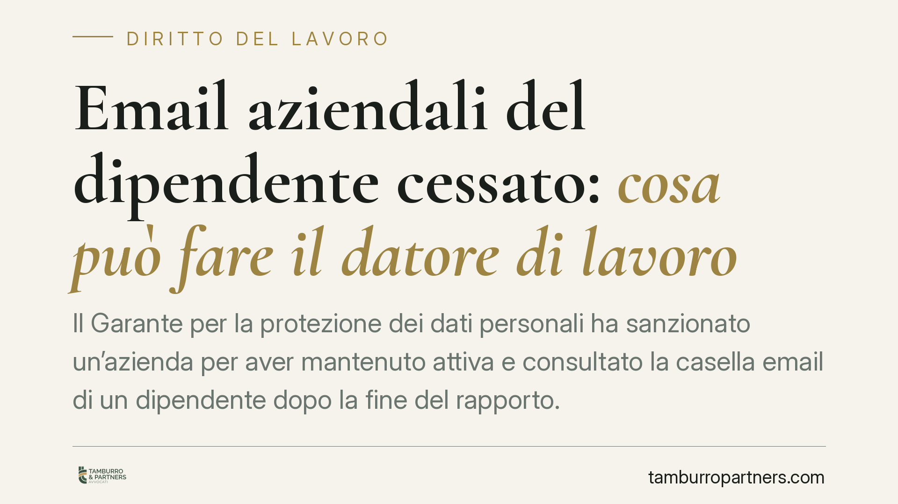

Email aziendali del dipendente cessato: cosa può fare il datore di lavoro
Il Garante per la protezione dei dati personali ha sanzionato un'azienda per aver mantenuto attiva e consultato la casella email di un dipendente dopo la fine del rapporto. La decisione chiarisce un punto delicato: alla cessazione, l'account va disattivato in tempi rapidi. Mantenerlo operativo per raccogliere messaggi espone il datore a sanzioni economiche rilevanti.

Il caso
Un'azienda ha continuato a tenere attiva la casella di posta elettronica aziendale di un lavoratore dopo la cessazione del rapporto, consultandone i contenuti e inoltrando i messaggi in arrivo ad altri indirizzi interni. Il Garante per la protezione dei dati personali ha ritenuto la condotta illecita e ha irrogato una sanzione pecuniaria.
Il principio è semplice nella sostanza: dopo la fine del rapporto di lavoro, il datore non ha più titolo per trattare le comunicazioni che transitano su una casella che resta nominativa, cioè riferibile a una persona identificata.
Inquadramento normativo
Il riferimento è il Regolamento (UE) 2016/679 (GDPR). Rilevano in particolare il principio di liceità, correttezza e trasparenza (art. 5, par. 1, lett. a), quello di limitazione della finalità (lett. b) e quello di limitazione della conservazione (lett. e): i dati vanno conservati solo per il tempo necessario alle finalità per cui sono stati raccolti.
Una casella del tipo nome.cognome@azienda.it è un dato personale. Le email che vi arrivano, anche dopo la cessazione, possono contenere corrispondenza privata del lavoratore e dati di terzi. Mantenerla attiva per intercettare messaggi significa trattare dati senza una base giuridica valida: il rapporto che la giustificava non esiste più.
Il Garante, in più occasioni, ha indicato la strada corretta. Alla cessazione la casella nominativa va disattivata e rimossa; eventuali messaggi in arrivo vanno gestiti con un sistema di risposta automatica che informi i mittenti della cessazione del rapporto e indichi un recapito alternativo.
Implicazioni pratiche
Per il datore di lavoro il messaggio è netto. La continuità operativa — ricevere ordini, comunicazioni dei clienti, scadenze gestite dall'ex dipendente — è un'esigenza legittima, ma non giustifica il mantenimento dell'account personale.
La differenza decisiva è tra caselle nominative e caselle funzionali o condivise (ad esempio amministrazione@, commerciale@). Le prime vanno chiuse alla cessazione. Le seconde, impersonali per natura, possono proseguire senza problemi perché non sono riferibili a un singolo lavoratore.
Un secondo profilo riguarda l'informativa. Il lavoratore deve sapere, fin dall'inizio del rapporto, come verrà gestita la sua casella alla cessazione: tempi di disattivazione, eventuale risposta automatica, destino dei messaggi. Senza questa informazione preventiva, il trattamento è privo di trasparenza.
Attenzione anche al profilo della corrispondenza. Accedere al contenuto delle email di un ex dipendente può integrare, oltre alla violazione privacy, un'illecita interferenza nella corrispondenza altrui, con possibili risvolti ulteriori. Il rischio non è solo la sanzione del Garante.
Cosa fare in concreto
- Disattivate la casella nominativa dell'ex dipendente in tempi rapidi dalla cessazione, evitando la consultazione dei messaggi in arrivo.
- Impostate una risposta automatica che comunichi ai mittenti la fine del rapporto e indichi un recapito alternativo, senza inoltrare i messaggi su altri account.
- Predisponete un'informativa chiara da consegnare all'atto dell'assunzione, che descriva la gestione dell'account email alla cessazione del rapporto.
- Privilegiate le caselle funzionali (impersonali) per le comunicazioni operative con clienti e fornitori, così da non legare la continuità aziendale a un singolo lavoratore.
- Rivedete le policy interne su posta elettronica e strumenti informatici, verificandone la coerenza con le indicazioni del Garante e con il principio di limitazione della conservazione.
Una riflessione finale
La gestione corretta della casella email alla cessazione del rapporto è un adempimento spesso trascurato perché percepito come secondario. La decisione del Garante dimostra il contrario: si tratta di un'area a rischio concreto, con sanzioni economiche non simboliche. Intervenire a monte, con procedure scritte e tempi definiti, costa molto meno di una contestazione.
Consigliamo alle aziende di affrontare il tema in modo sistematico, inserendolo nelle procedure di offboarding del personale insieme alla restituzione dei dispositivi e alla disattivazione delle utenze.
---
*Contributo informativo a cura di Tamburro & Partners - Avv. Giuseppe Tamburro. Non costituisce parere legale.*
Ogni storia di lavoro ha i suoi tempi.
Se gestisci HR e vuoi un confronto su contenzioso, ispezioni o licenziamenti, scrivi allo studio. Ti rispondiamo entro un giorno lavorativo.